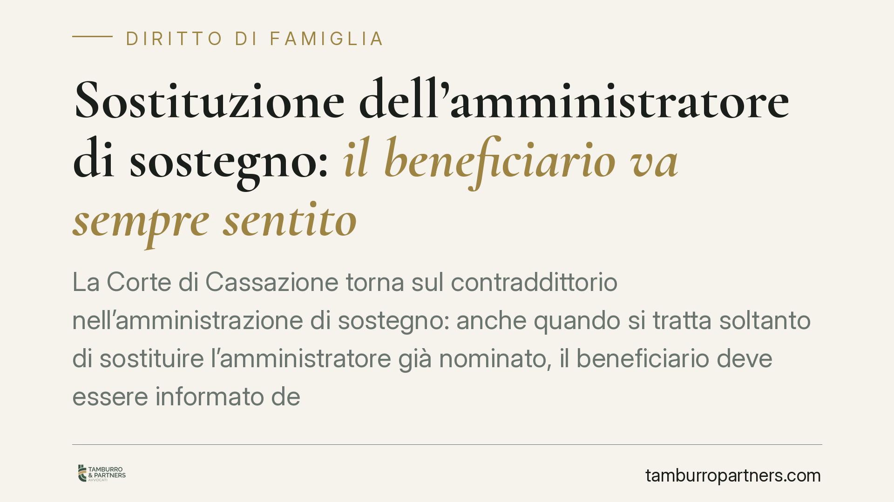

Sostituzione dell'amministratore di sostegno: il beneficiario va sempre sentito
La Corte di Cassazione torna sul contraddittorio nell'amministrazione di sostegno: anche quando si tratta soltanto di sostituire l'amministratore già nominato, il beneficiario deve essere informato del procedimento e messo in condizione di essere ascoltato. L'omissione di questi passaggi vizia la decisione. Un principio che rafforza l'autonomia processuale della persona fragile, spesso trascurata proprio quando si decide su chi la assiste.

Il caso
Un giudice tutelare dispone la sostituzione dell'amministratore di sostegno in carica, ma lo fa senza avvisare il beneficiario, senza notificargli l'avvio del procedimento e senza sentirlo. La questione arriva in Cassazione, che affronta un punto pratico ma ricorrente: la persona per la quale l'amministrazione è stata istituita ha diritto di partecipare anche alla fase in cui cambia soltanto la figura chiamata ad assisterla?
La risposta della Corte è affermativa. La mancata informazione, notificazione e audizione del beneficiario non è una semplice irregolarità: incide sulla regolarità del procedimento e sulla validità del provvedimento adottato.
*Nota interna: gli estremi esatti dell'ordinanza (numero e anno) vanno confermati su fonte ufficiale prima della pubblicazione.*
Inquadramento normativo
L'amministrazione di sostegno è disciplinata dagli artt. 404 e seguenti del codice civile. È lo strumento pensato per chi, a causa di una menomazione o infermità anche parziale o temporanea, non è in grado di provvedere ai propri interessi. A differenza dell'interdizione, non priva la persona della capacità d'agire in modo generalizzato: conserva l'autonomia per tutti gli atti che non richiedono l'intervento dell'amministratore. È una misura di protezione, non di sostituzione integrale della volontà.
Il cardine dell'orientamento è l'art. 407 c.c., che disciplina l'istruttoria del giudice tutelare. La norma impone al giudice di sentire personalmente la persona interessata, recandosi ove occorra nel luogo in cui si trova, e di tenere conto dei suoi bisogni e delle sue richieste. L'audizione non è un adempimento formale: è il momento in cui la volontà del beneficiario entra nel procedimento.
Sul piano processuale, ai procedimenti in materia di amministrazione di sostegno si applica il rito camerale previsto dall'art. 720-bis c.p.c., che a sua volta richiama le regole sui procedimenti di interdizione e inabilitazione. È in questa cornice, e non nell'art. 295 c.p.c. (che riguarda la sospensione del processo per pregiudizialità, estranea alla materia), che vanno collocate le garanzie di partecipazione.
La ratio della decisione
Il principio è coerente con l'impianto della misura. Se l'amministrazione di sostegno esiste per proteggere la persona valorizzandone la volontà residua, non ha senso escludere quella persona proprio dalla decisione su chi la assisterà. La sostituzione dell'amministratore non è una vicenda meramente organizzativa interna: tocca direttamente la sfera del beneficiario, che ha un interesse concreto a interloquire sulla scelta.
Da qui la qualificazione del vizio. L'omessa audizione, unita alla mancata informazione sul procedimento, integra una violazione del contraddittorio che rende il provvedimento invalido e censurabile in sede di impugnazione. Va precisato, tuttavia, che l'audizione può essere legittimamente omessa quando risulti impossibile o dannosa per le condizioni della persona: in tal caso il giudice deve darne conto motivatamente. Non si tratta quindi di un automatismo assoluto, ma di un obbligo che cede solo di fronte a un'impossibilità documentata.
Implicazioni pratiche
Per il beneficiario. Il principio conferma un'autonoma legittimazione a partecipare al procedimento e a far valere l'eventuale vizio. Anche nella fase di sostituzione, la persona ha diritto a ricevere notizia dell'iniziativa e a esprimersi.
Per l'amministratore di sostegno (uscente o subentrante). Chi promuove o subisce la sostituzione ha interesse a verificare che il beneficiario sia stato correttamente coinvolto: un provvedimento adottato in violazione del contraddittorio è esposto a reclamo e alla possibile caducazione, con ricadute sulla continuità della gestione.
Per il giudice tutelare. Ne discende l'onere di documentare l'informazione al beneficiario e la sua audizione, o di motivare le ragioni dell'eventuale impossibilità. La speditezza del rito camerale non giustifica la compressione delle garanzie partecipative.
Cosa fare in concreto
- Verifica la notifica. Controlla che l'avvio del procedimento di sostituzione sia stato comunicato al beneficiario e ai soggetti legittimati ex art. 406 c.c.
- Documenta l'audizione. Assicurati che dagli atti risulti l'ascolto del beneficiario oppure la motivazione dell'eventuale impossibilità.
- Utilizza il rimedio corretto. Contro il provvedimento del giudice tutelare il mezzo è il reclamo alla corte d'appello ai sensi dell'art. 720-bis c.p.c.: individua con precisione il termine decorrente dalla comunicazione.
- Deduci il vizio in modo puntuale. Nel reclamo circostanzia l'omessa informazione o audizione e il pregiudizio concreto derivatone, senza limitarti a un richiamo generico al contraddittorio.
- Conserva la documentazione sanitaria. Se si invoca l'impossibilità dell'audizione, i riscontri clinici sulle condizioni della persona diventano decisivi.
È opportuno esaminare ogni fascicolo di sostituzione con attenzione ai profili procedurali qui descritti, verificando tempestivamente il rispetto dei termini di reclamo.
Ogni famiglia ha il suo equilibrio.
Separazione, divorzio, affidamento, assegno: se vuoi un confronto riservato su una specifica situazione, scrivi allo studio. Ti rispondiamo entro un giorno lavorativo.